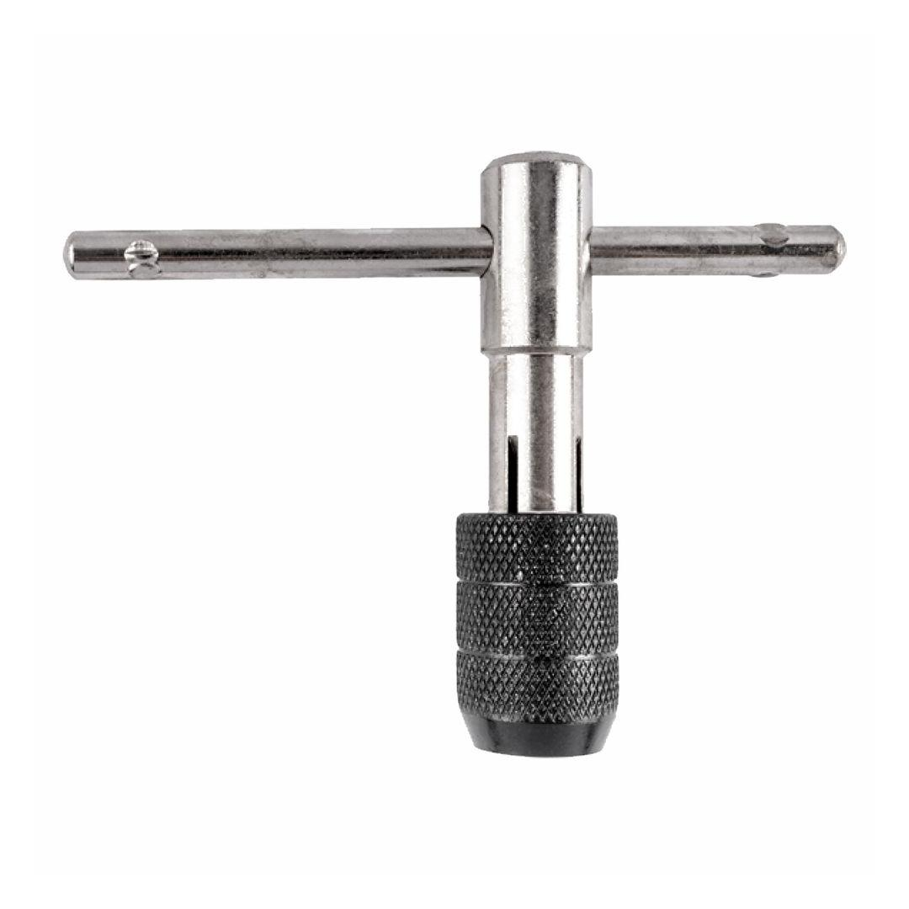

NR9007B
239.78

This product comes in: BULK packaging
Introducing heavy duty T-handle tap wrenches from Tork Craft, a selection of durable hand tools ideal working with threading tools. Adjustable wrench jaws are self-equalizing to securely hold taps, extractors and reamers. Spring tension holds the T-handle in place.
Our range features tap wrenches designed to be used with a variety of thread sizes, ensuring you have a tap wrench to suit the application. The collet body is accompanied by a knurled surface, offering enhanced grip when fastening tap threads and fittings.
A tap wrench is a hand tool designed to tap internal thread with ease. They often feature adjustable jaws that secure to the fitting, with handles allowing you to turn it with ease.